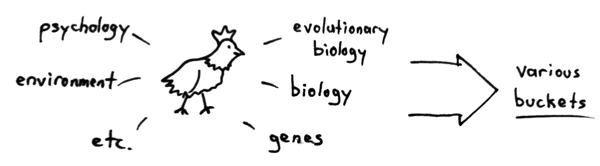

晚上不想学习，就随便翻出一个视频来看，意外的是其中的一些观点带给我的震惊程度不亚于当年看黑客帝国知道我们的世界可能是虚拟的时的感觉。视频是人类行为生物学的第一节课。
生理与想法
生理上的一些变化会影响人的想法
例如某些基因与人的暴力程度有关联人的想法也能使生理产生一些变化
例如人想到一些激动的事心跳就会加快
拒绝分类思想（categorical thinking）
世界是连续的，但我们为了交流和记忆的方便，根据相似程度把事物划分为不同的种类。拿颜色为例，颜色有无穷多种，我们把它们分成了赤橙黄绿青蓝紫，落在一定范围内的颜色我们都叫它红色。我们运用了分类思想（不知道 categorical thinking 翻译成分类思想是否恰当，姑且这么叫吧），这在带给我们方便的同时也产生了一定的问题。
当我们过于关注种类时，我们看不到属于同一种类的两种事物的不同之处。
我们区分不出两种红色的区别，另外一个例子，人类可以发出的声音是连续的，我们的语言对其进行了分类，当不同文化的分类不一样时，可能就会产生误解，芬兰语言中不区分 ‘b’ 和 ‘p’，他们也失去了辨别这两种音的能力，一个芬兰人可能会把 ‘pear’ 说成 ‘bear’。当我们在种类之间划一个界限时，我们看不到两件事物有多么相似。
59 分和 60 分有着天壤之别，这是因为我们放了一个及格线在那里，高于 60 就及格，低于 60 就挂科。但是这两个分数真的有这么大的差距吗？恐怕它们之间基本上没什么区别。当我们过分关注分界线时，我们失去了大局观。
一只母鸡看到了马路对面有一只公鸡，为什么它就急急忙忙的穿过了马路？
我们可以从各种各样的角度来解释这件事。从进化学的角度来说看到异性不被吸引的鸡都被淘汰掉了，从生理的角度来说，母鸡看到公鸡后体内各种激素水平剧烈变化，然后再大脑的指挥下鸡的腿做出了跑向马路对面的动作，我们还可以说环境的变化等等。我们很容易从某种角度给出一种解释，但是却忽略了导致母鸡这一行为的并不是只有某一种原因，所有的因素加在一起才促成了这一行为，我们失去了大局观。
即使意识到了这一点，想要全面地看待问题依旧很难，历史上一些很伟大的科学家也犯过站在自己的领域片面的看待问题的错误，1949 年的诺贝尔生理或医学奖被授予了葡萄牙医师安东尼奥·埃加斯·莫尼斯（António Egas Moniz）以表彰他发明的前脑叶白质切除术（lobotomy），安东尼奥认为精神分裂症的原因仅仅是一些神经的病变，只要切除这些神经就能使患者恢复正常，这种手术给无数人带来了不幸。
这门课讲的是生理如何影响行为，我们要拒绝为行为寻求单一解释的诱惑。
行为的复杂
一些学科在解决问题时，会把一个大问题分成几个小问题，只要理解了这些小的组成部分，就能理解大的问题。但想要理解人的行为却没有这么容易，多种因素以复杂的方式相互作用共同导致了人的某一行为，因此人的行为往往不能用单一的原因来解释。
并且我们试图用一个原因解释一件事时，往往我们只是用了一种简单的方式来描述所有之前发生的事。人的某一行为的原因可以追溯到事发的前一瞬、最近的经历、年少时成长的经历、产前母亲的经历乃至几百万年的人类进化。
我们面临的挑战
我们要接受我们不过是一种动物的事实。
把两只雌性仓鼠放在一起，几个月之后它们的排卵周期就会同步，这种过程是通过信息素的传递完成的。如果再放进一只雄性仓鼠，这种同步就会被打破。更有趣的是，同步的方向是确定的，总是占主导地位的雌性同步其他的雌性。人们在羊、狗、猫、猪等动物中都观察到了这种现象。
人类中也有这种现象，1970 年在威尔斯利 学院大一女新生发现自己的生理周期会和室友同步，直到有了男朋友这种同步就会中断，而且方向是更善于交往、更外向的的人同步其他的人。（一脸震惊）我们能做一些其他动物动物都不能的事。
我们能用一种独有的方式使用我们的生理系统。聚精会神的下六个小时象棋能和跑马拉松消耗同样多的能量，尽管棋手不过是坐着思考而已。我们会为自己终有一死感到焦虑，我们会同情非洲儿童的不幸遭遇，我们会为小说中的人物感到开心，这些都是其他动物所不能的。
课程大纲
- 前半部分讲各种各样的“分类的思想”
- 后半部分把所有的碎片拼在一起，消除“分类思想”
推荐教材
- Robert Sapolsky. Why Zebras Don’t Get Ulcers. 2004.
- James Gleck. Chaos: Making a New Science. 2008